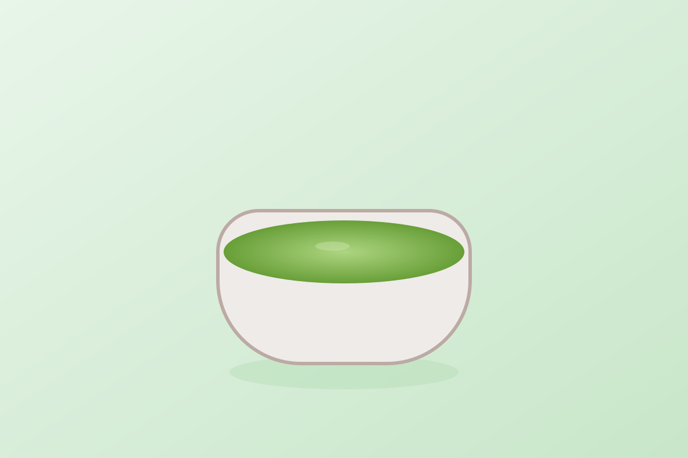

Matcha
Quick answer
Matcha fits anti-inflammatory drink routines because it is a concentrated tea option that can be prepared consistently as part of a simple daily habit.
What it is
Matcha is a finely ground green tea powder that can be whisked into water or used in simple drink recipes.
Why matcha may support an anti-inflammatory diet
Matcha is useful because it provides another practical drink option in a food pattern that values repeatable daily habits and less processed beverage choices.
Key nutrients and compounds
- Catechins
- Polyphenols
- L-theanine
- Caffeine
Potential health benefits
- Adds variety to the drinks cluster
- Supports simple daily beverage habits
- Works as an alternative to sweeter drinks
How to drink matcha
- Whisk matcha with hot water
- Use it in a simple unsweetened latte
- Pair it with breakfast routines
Shopping and storage
Store matcha sealed, dry, and away from light. Buy an amount you will actually use regularly.
FAQ
Is matcha anti-inflammatory?
It is often included in anti-inflammatory drink lists because it is a practical tea-based beverage with easy daily use.
Evidence note
Matcha is described here as a supportive beverage within a broader eating pattern, not as a treatment by itself.
The strongest factual framing on this page is limited to established context such as catechins, polyphenols, and routine plain-tea use. The page does not claim that drinking matcha guarantees a specific health outcome.